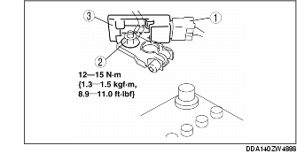

Current sensor removal/installation [ZY]
- • If the negative battery cable contacts a metal part, it can cause fire or damage to the electrical components.When removing the current sensor, be careful not to contact a metal part, and always hold the negative battery cable in your hand.
1. Disconnect the negative battery cable.
2. Remove in the order indicated in the table.

3. Install in the reverse order of removal.